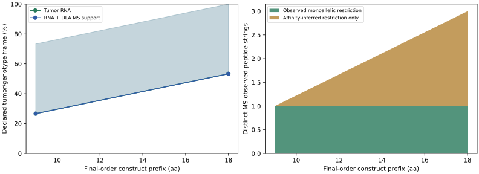
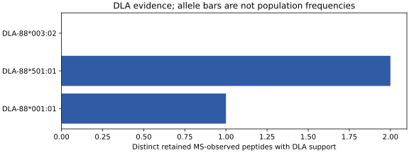
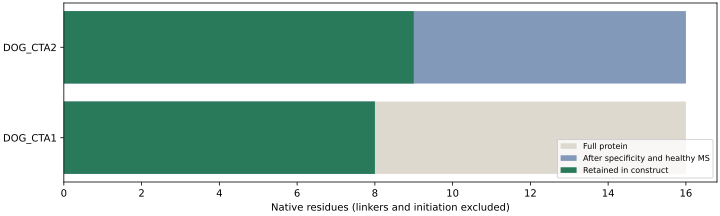
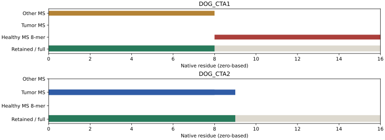

Cohort: osteosarcoma. Status: exploratory_unassessed.
RNA cohort: Synthetic independent-dog fixture; not canine prevalence evidence. Population: three invented dogs; repeated biopsies plus unresolved donor.
Rank exact protein sequences by absolute RNA expression in independent untreated primary-tumor dogs, then retain contiguous regions with exact positive-MS observations and qualifying DLA affinity evidence. The construct is unassessed for canine presentation, processing, safety and efficacy.
Expression threshold: 5 TPM. Repeated biopsies count once: all measured biopsies must pass for the lower bound; any possibly positive or missing biopsy contributes to the upper bound. Missing RNA is unknown. These are evidence bounds, not confidence intervals or clinical coverage.
Allowed normal tissues: testis, placenta. Policy: synthetic reproductive-restriction policy (v1); definition: strict. Somatic RNA counterevidence threshold: 1 TPM. These labels refer to the supplied canine policy; the human HPA definitions are not used.
All rejected and unknown translated source occurrences remain specificity background. Verified healthy-primary MS outside the allowed tissues supplies an 8-mer exclusion. Tumor/adjacent tissue, cell lines and unverified tissue labels do not establish healthy-normal counterevidence; absence of observations does not establish safety.
MS evidence belongs to the exact observed peptide. Monoallelic restriction is separate from affinity-inferred multiallelic/untyped assignment. Human-host DLA transfection establishes a distinct experimental context, not endogenous canine presentation. Raw sample and host/source taxonomy facets remain in the tables.
Genotype frame: synthetic cohort. Three invented matched genotypes; not a breed or global population estimate. Joint coverage uses per-target expression and MS-qualified alleles on full supplied genotypes. Pairing modes: observed. Unsupported genotype mass: 0.533; missing mass: 0.200. Unsupported genotype mass counts dogs with any unassessed allele; it can overlap demonstrated reach through another allele and is not an additional coverage category. These estimates do not imply worldwide or breed coverage. No HWE, human mortality prior or human p95 is used.
Affinity provider: frozen_affinity_archive. Capability and model/sequence hashes: dla_capabilities.csv. Cleavage is unassessed unless an explicit callback was supplied; injected predictions retain that provenance and do not validate a model. Coding policy: generic; generic coding uses a deterministic standard genetic-code reverse translation without species optimization. UTR and polyA settings and total AA/nt limits are recorded in the manifest.
Input file SHA256: 480dd82ebcf52a04ab550f8a42b2aeab2964482afd01e1e43dc53f88a1d79cad. Reference identity: 3c57c3e384f0568d67ad1ce55826a3a4cbb12e6ef89d9faae1991b8a8d536f23. The input copy has the same canonical JSON identity; its formatting may differ from the original file.
| Measure | Count |
|---|---|
| source_occurrences | 4 |
| exact_protein_groups | 3 |
| identified_cohort_dogs | 3 |
| cohort_samples | 5 |
| assembled_proteins | 2 |
| assembled_native_pieces | 2 |
| construct_length_aa | 18 |
| construct_length_nt | 63 |
| MS_observed_peptides | 3 |
| observed_monoallelic_peptides | 1 |
| inferred_only_peptides | 2 |
| MS_observations | 3 |
| peptide_DLA_pairs | 3 |
| panel_alleles | 3 |
| admitted_groups | 2 |
| rejected_groups | 1 |
| unknown_groups | 0 |
| rejected_MS_observations | 3 |
| selection_enabled_alleles | 2 |




| rank | proteoform_key | name | gene_ids | protein_ids | transcript_ids | occurrence_ids | length_aa | restriction_status | restriction_reason | cohort | positive_dogs | possible_positive_dogs | evaluable_dogs | total_identified_dogs | prevalence_lower | prevalence_upper | threshold | unit | eligible | selected | selection_reason |
|---|---|---|---|---|---|---|---|---|---|---|---|---|---|---|---|---|---|---|---|---|---|
| 1 | 7c84e45f58cd51009a281b7244ef1d87f7dde7c55f4c1952c41a9db5e7c91761 | DOG_CTA3 | g3;g4 | p3;p4 | t3;t4 | cta3;heart_alias | 16 | rejected | healthy_primary_RNA:heart;independent adult-heart coding occurrence;synthetic reviewed reproductive restriction | osteosarcoma | 3 | 3 | 3 | 3 | 1.000000 | 1.000000 | 5 | TPM | False | False | rejected |
| 2 | a4a229eb9bb5bfc978ca5e46dd19e6bfa62d72f4487a7ae741a86f70e52e323e | DOG_CTA1 | g1 | p1 | t1 | cta1 | 16 | admitted | synthetic reviewed reproductive restriction | osteosarcoma | 1 | 2 | 2 | 3 | 0.333333 | 0.666667 | 5 | TPM | True | True | assembled |
| 3 | db5f618a36743234dbfcaa21c9939fdf38c4ba0c8dc2feedaa73bbbd59735667 | DOG_CTA2 | g2 | p2 | t2 | cta2 | 16 | admitted | synthetic reviewed reproductive restriction | osteosarcoma | 1 | 1 | 3 | 3 | 0.333333 | 0.333333 | 5 | TPM | True | True | assembled |